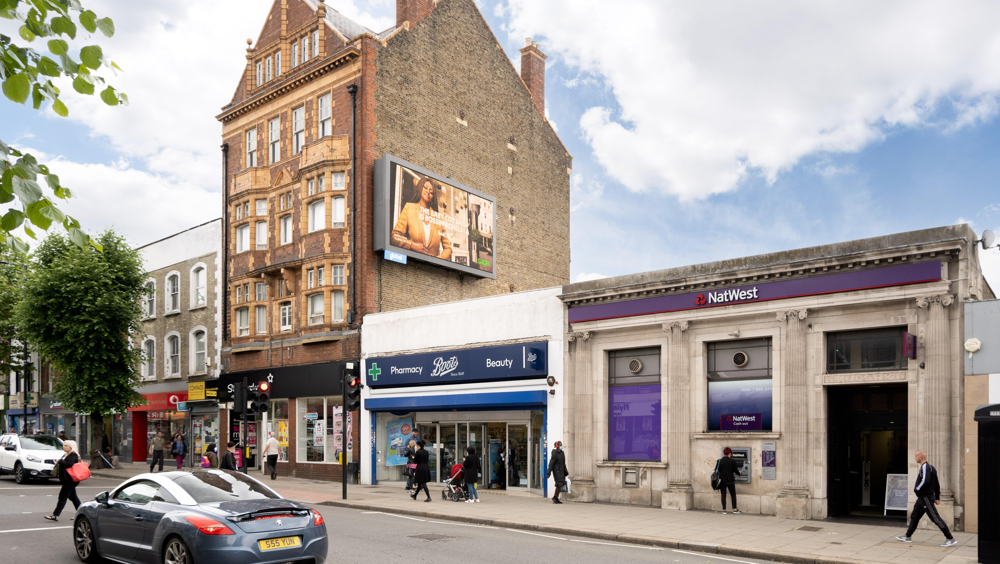

High Road shopfronts get a seasonal refresh
Independent traders are joining a shared autumn window trail, giving pedestrians a reason to explore beyond the biggest stores.
Read more →
Independent traders are joining a shared autumn window trail, giving pedestrians a reason to explore beyond the biggest stores.
Read more →A drop-in afternoon brings local groups, clubs and residents together around Tally Ho Corner.
Read more →A short route links quieter residential streets with pockets of greenery around North Finchley.
Read more →